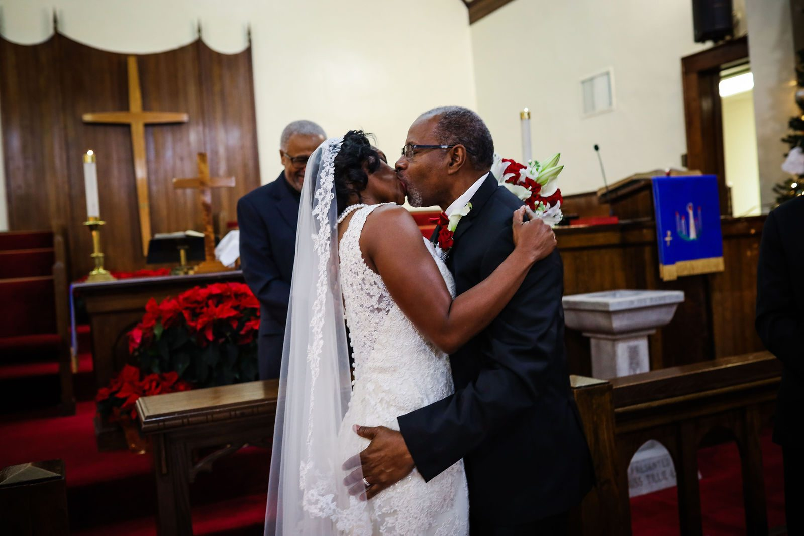
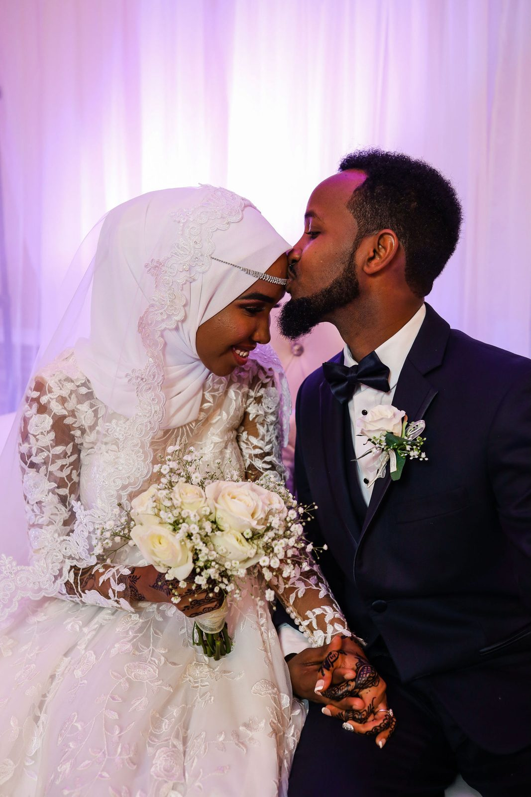
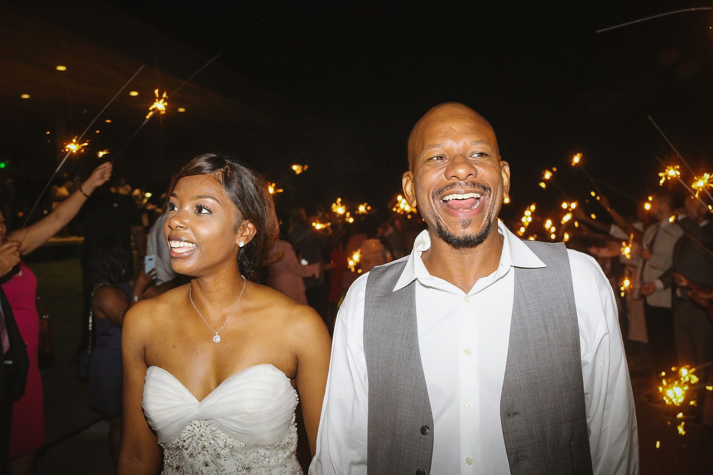
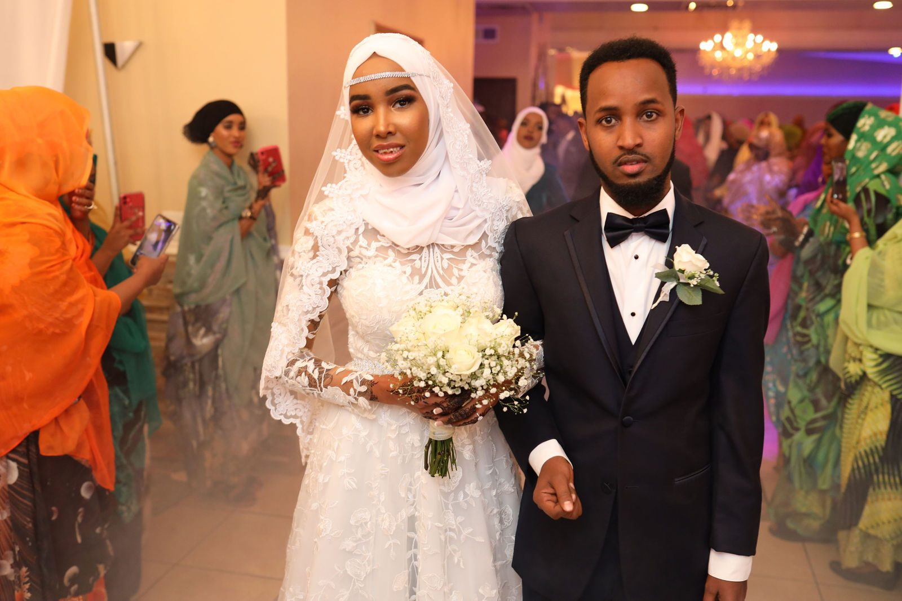
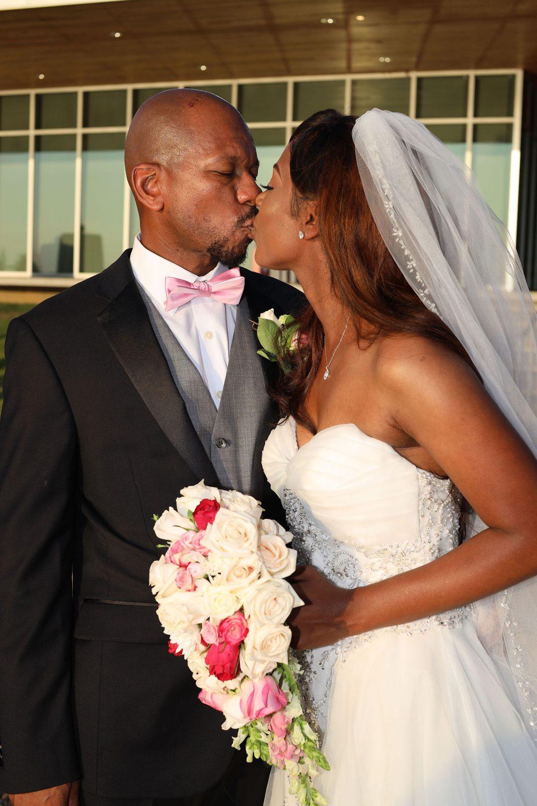

Nashville familyphotographer. Everyone in the frame.
Somebody always ends up behind the camera instead of in the picture. Leo Operations photographs Nashville families so everyone is in the frame: portraits in the park, the whole extended family at the reunion, the 40th birthday, the 50th anniversary and the Christmas card.
Family sessions
An hour, a place you love, and a photographer who knows how to get a three-year-old and a grandfather to look at the camera at the same time. We guide the poses, keep it moving and photograph the in-between moments, which are usually the best ones.
Reunions, anniversaries and milestone birthdays
Big family events are where our event experience pays off. We have photographed more than 1,000 events, including DJ AOne's 40th birthday at Madison Square Garden. At a reunion or anniversary we work from a list of family groupings so every branch of the family gets its photo, then cover the speeches, the food and the dance floor.
Every family, every skin tone
We light and grade for every shade of skin, not just the brightest one in the frame, and we photograph families of every faith and tradition. Leo Operations is Black-owned and based in Nashville.
Holiday and card season
From late November through mid December, family sessions turn into Christmas card sessions. See our Christmas photos page and our guide to the best Christmas photo spots in Nashville.
Everythingyou need.
Holidayportraits.





Questions, answered.
What is the average cost for a family photoshoot?
It depends on session length, the number of people and the location. Send your family size, location and dates and we will quote it in writing. Our event photographer cost guide covers market rates.
What are the best places for family photos in Nashville?
Centennial Park, the Shelby Street pedestrian bridge, Cheekwood, the Percy Warner Park steps, Radnor Lake and your own home are all strong choices. Some parks and gardens require a permit or fee for professional photography, which we arrange.
Do you photograph family reunions?
Yes. We work from a list of family groupings so every branch gets its portrait, and we cover the full event.
What should our family wear?
Coordinate, do not match. Pick two or three colors and let each person wear them differently. Avoid big logos and tiny busy patterns.
How do we book?
Email us or call (773) 573-2135 with your family size, a location idea and a few dates.
Let’s make itunforgettable.
Tell us the date, the place and what you need. We will tell you how we would cover it.
Email Leo Operations →